Module 9: Floodplain Geomorphic Units
1 Introduction
For this assignment, I chose to focus on the Two Medicine watershed, just east of the Rocky Mountains in Northern Montana. I wanted to find an area with clear floodplain features with fewer humanimpacts than many of the river systems closer to home in Missoula. The section I chose to look at is partly confined, bouncing between gentle hillslopes as they come off the Rockies (Fig. 1.1).
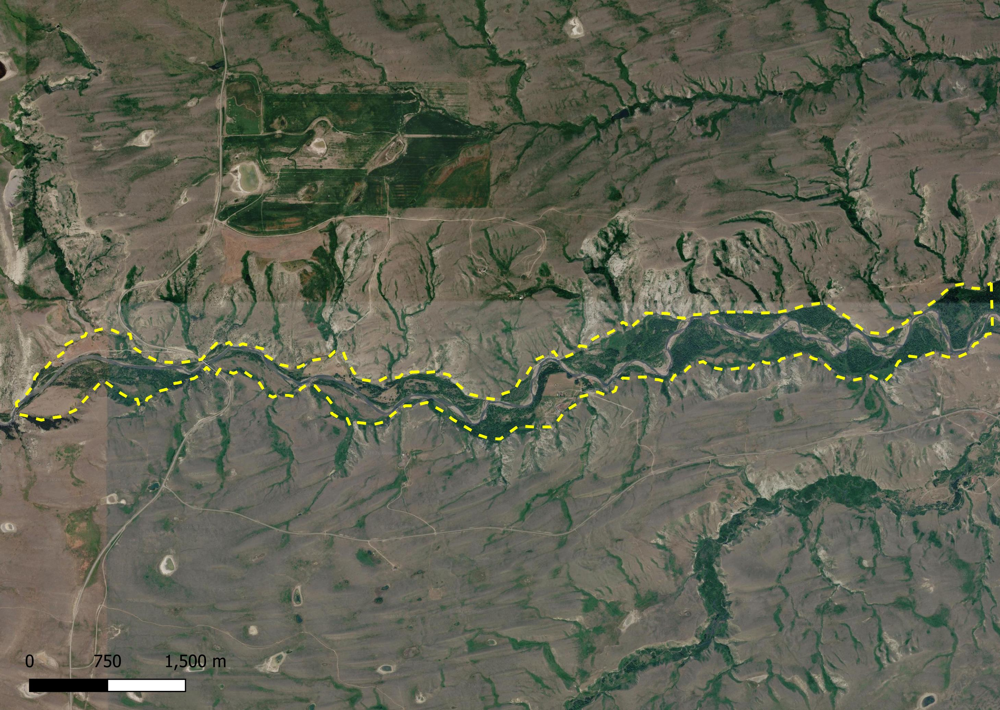
Figure 1.1: The yellow dashed line shows the extent of the reach I mapped. This is Two Medicine Creek, just East of the Rocky Mountains in Montana.
2 Geomorphic Unit Mapping on the Floodplain
I started by mapping floodplain geomorphic units, first mapping the active channel itself. This felt relatively straightforward, though questions came up for me about what is considered the active channel. When do I include islands, vs. when to call those part of the floodplain. Take the example of the curve below - The water obviously counts as active channel. Just below the channel is a bank-attached bar that is scoured regularly enough to prevent revegetation (black). Still further up in elevation does have some pockets of water, but vegetation is growing back. I ended up counting the closest area to the channel, but not the others (Fig. 2.1).
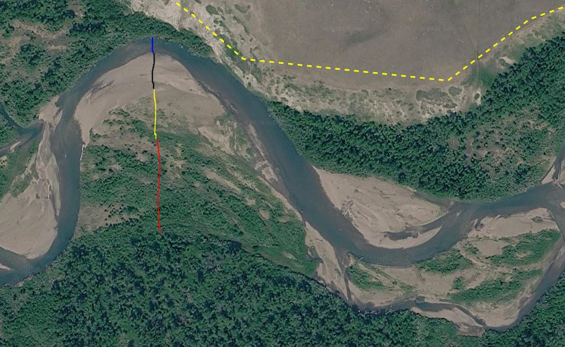
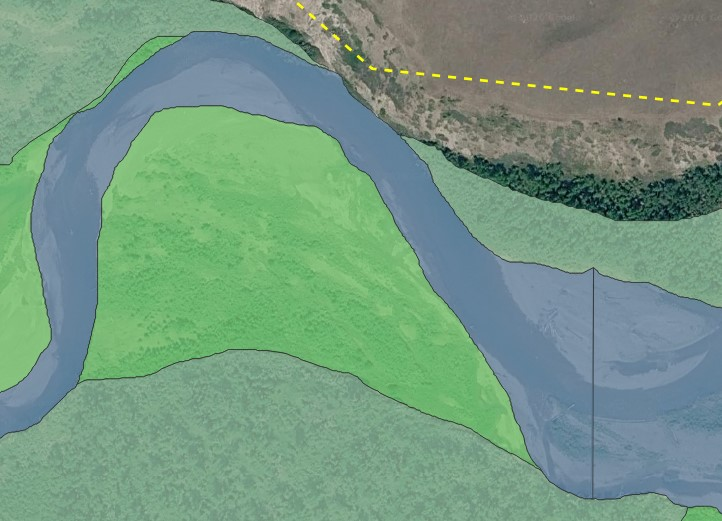
Figure 2.1: A river bend demonstrating the gradual transition from active channel to terrace. I ended up calling actively scoured bank as part of the active channel.
This process then only got more difficult as I moved toward the drier end of the geomorphic unit spectrum. For each category, there were some areas that were easy to differentiate, but the boundaries around active floodplain, inactive floodplain, and terrace felt very difficult to distinguish, especially in an area where even the terrace is still green and lush with forested vegetation. In the example below, the orange seemed borderline one whether it should be active channel or active floodplain. Based on the rules above, I decided it was active channel. Red has water running over it, but has some vegetation growing back. This seemed like it should be active floodplain, but due to the water, felt like it could potentially be considered active channel. I decided to call it active floodplain. Then in pink, there was still water but vegetation was growing back easily. I ended up calling it inactive floodplain but perhaps it was still active? Then the purple felt more clearly forested, terrace. Definitely in the valley bottom, but from another hydrologic regime.
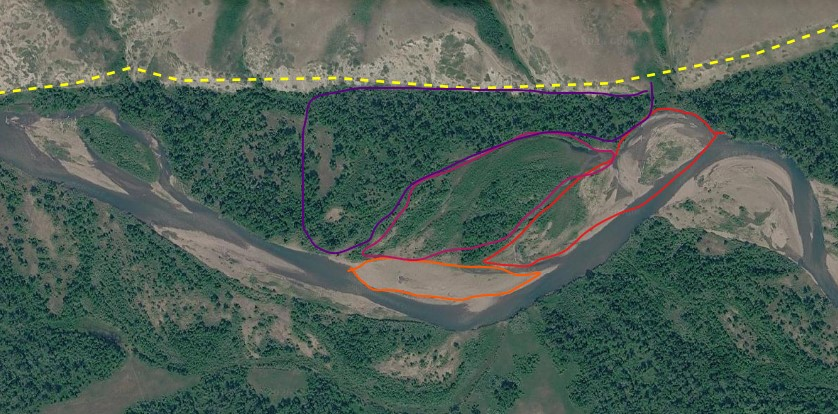
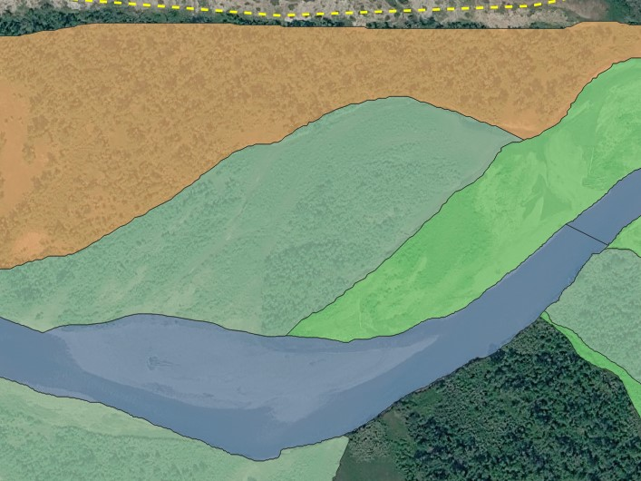
Figure 2.2: A river section demonstrating the challenge of mapping floodplain units. On the left, I show the various surfaces I was challenged to map. The right shows the final product.
I completed the mapping, but ended with a lot of questions on how I would more precisely delineate the boundaries between the various categories (Fig. 2.3).
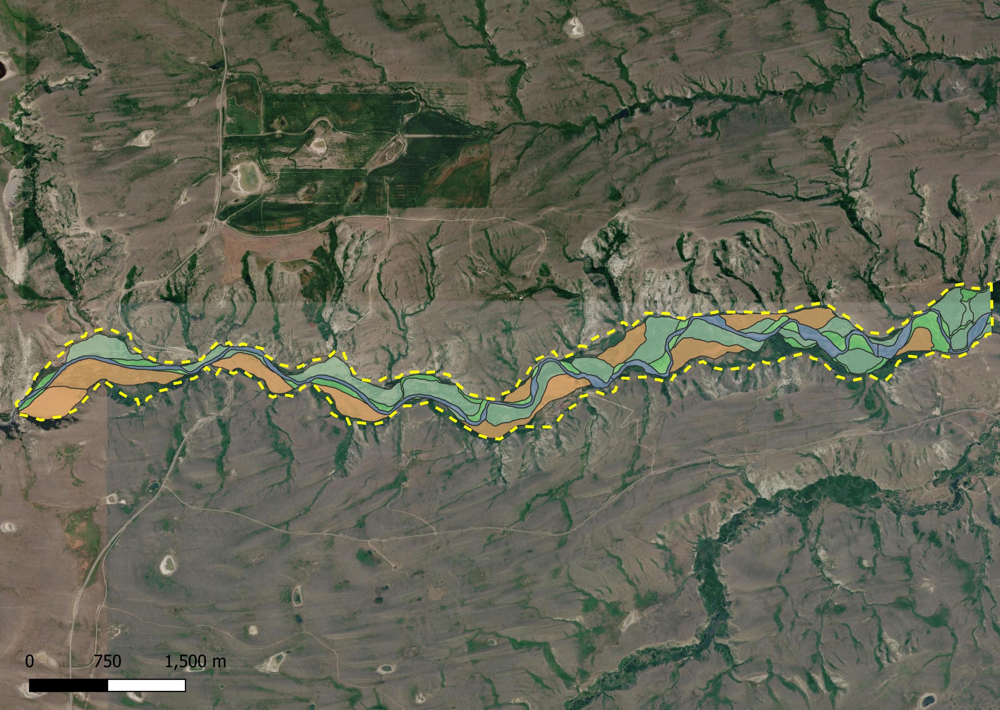
Figure 2.3: The yellow dashed line shows the extent of the reach I mapped. This is Two Medicine Creek, just East of the Rocky Mountains in Montana.
3 Calculated floodplain metrics
Below are the calculated metrics from my delineated geometric units.
| Metric | Value |
|---|---|
| Active Channel Area (m2) | 493,226 |
| Active Channel Proportion | 0.12 |
| Active Floodplain Area (m2) | 401,935 |
| Active Floodplain Proportion | 0.09 |
| Inactive Floodplain Area (m2) | 1,182,286 |
| Inactive Floodplain Proportion | 0.28 |
4 Automated VBET Product
After mapping my valley bottom, I then compared my result with the automated VBET product. There were a lot of areas of both overlap and incongruity. Below are a few examples.
- There were some places where the channel from VBET was somewhat less sinuous than what I found (Fig. 4.1). This may be due to a difference in the dates of the DEM used for the VBET and the imagery available that I used to do my mapping. You can see in the same image that I tended to have a wider area defined as active compared with VBET. I’m less sure about whether this is due to a difference in definition, or a difference in timing.
- If my defined Active and Inactive Floodplain categories are combined to define the Valley Bottom Extent from VBET, It seems like there’s fairly good alignment between the two (Fig. 4.2).
- However there were areas of pretty poor alignment (Fig. 4.3). In the example below, a settlement and pasture disrupts the flow of the valley bottom. The mapping from VBET is more sinuous here, but it also doesn’t respond to the imagery when defining the active vs. inactive floodplain. I think this is likely due to a combination of two things: First, the same timing issue as before: The VBET and my mapping likely rely on remote sensing data from different time points. Second, I primarily relied on imagery, meaning much of my mapping was responding to changes in vegetation. In contrast, I think VBET relies more heavily on DEMs, meaning elevational gradients have a larger role in determining floodplain boundaries.
- Finally, there seemed to be a lot of incongruity between what I thought was inactive versus the VBET tool. Again, some of this is due to changes in the channel resulting in changes to the floodplain. See the below example (Fig. 4.4). Here, there’s a section with vegetation growing in linear patterns like it has some direct influence of the channel that I mapped as active and VBET didn’t map at all (Blue question mark on VBET imagery). Or an area with fully developed forest that VBET mapped as active and that I mapped as inactive (marked with a purple question mark in my mapping). In these instances, it’s hard for me to know which to believe, partly because I don’t have a sense for the veg, and partly because I don’t have a sense for the time scales it occurs across.
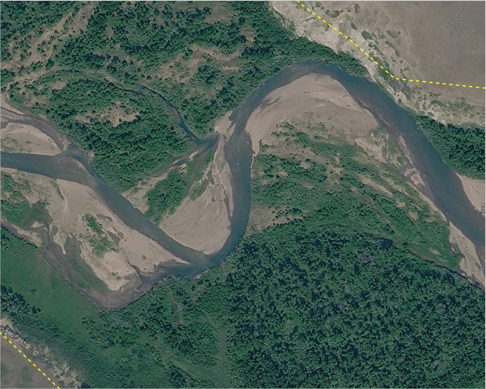
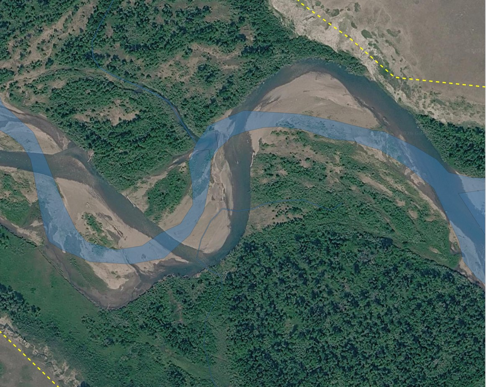
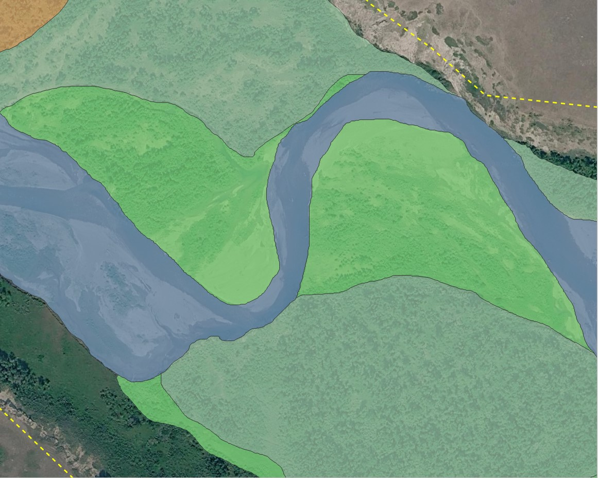
Figure 4.1: The Active Channel from VBET had a more sinuous path defined in this section. On the left is imagery, the middle shows the VBET river and the right is my hand delineated product.


Figure 4.2: This section demonstrates areas of good alignment between VBET and my product. I was a little more inclusive in my delineation.
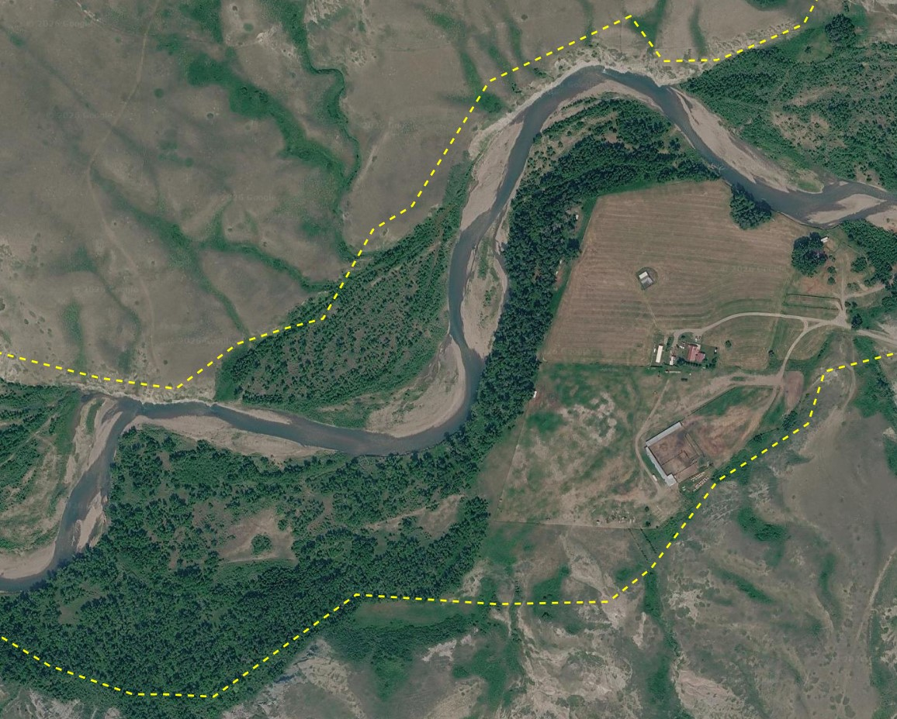
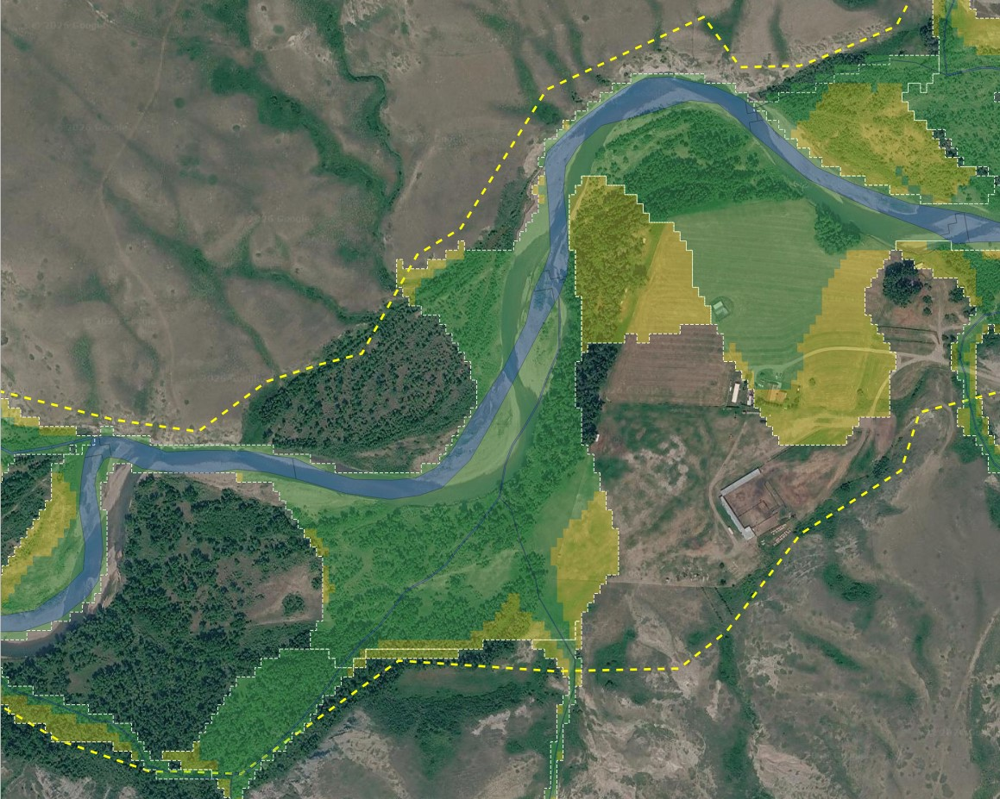
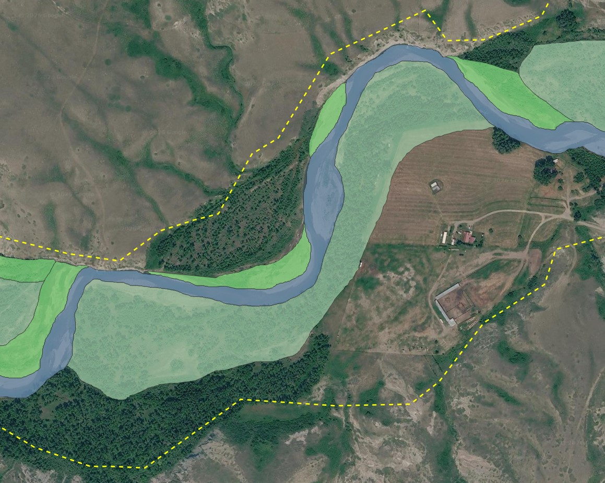
Figure 4.3: This section demonstrates an area of poor alignment
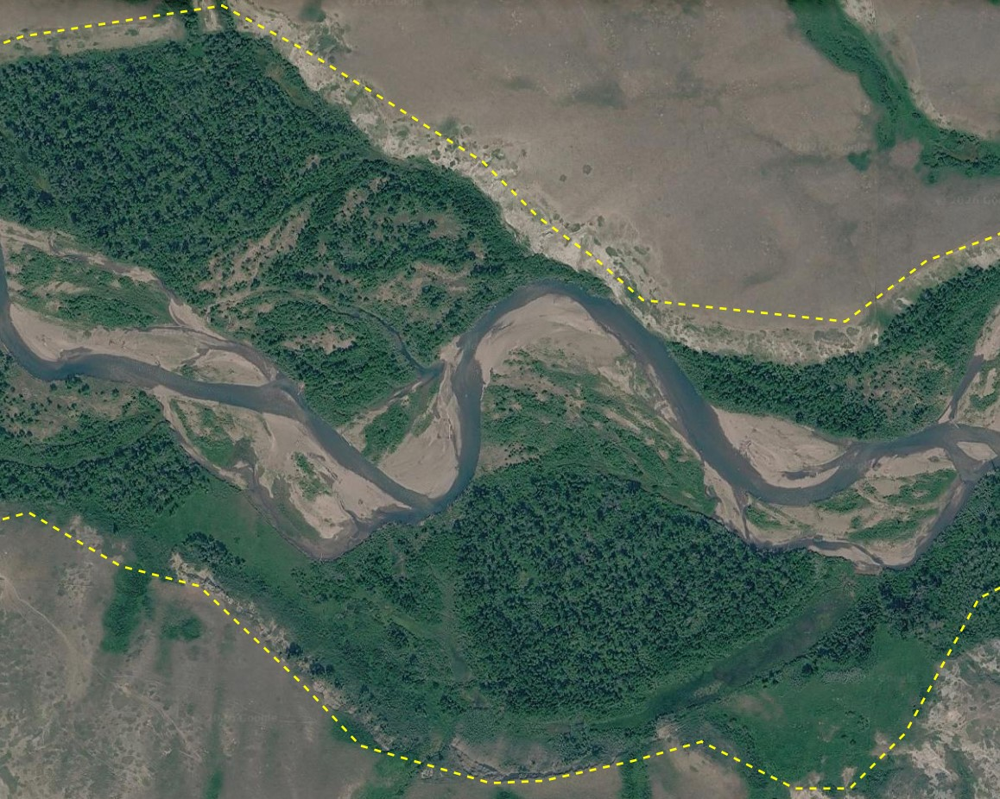
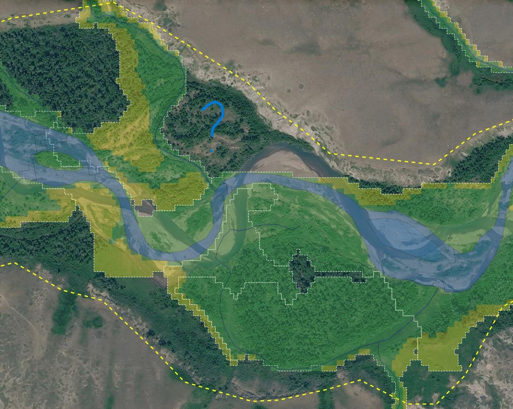
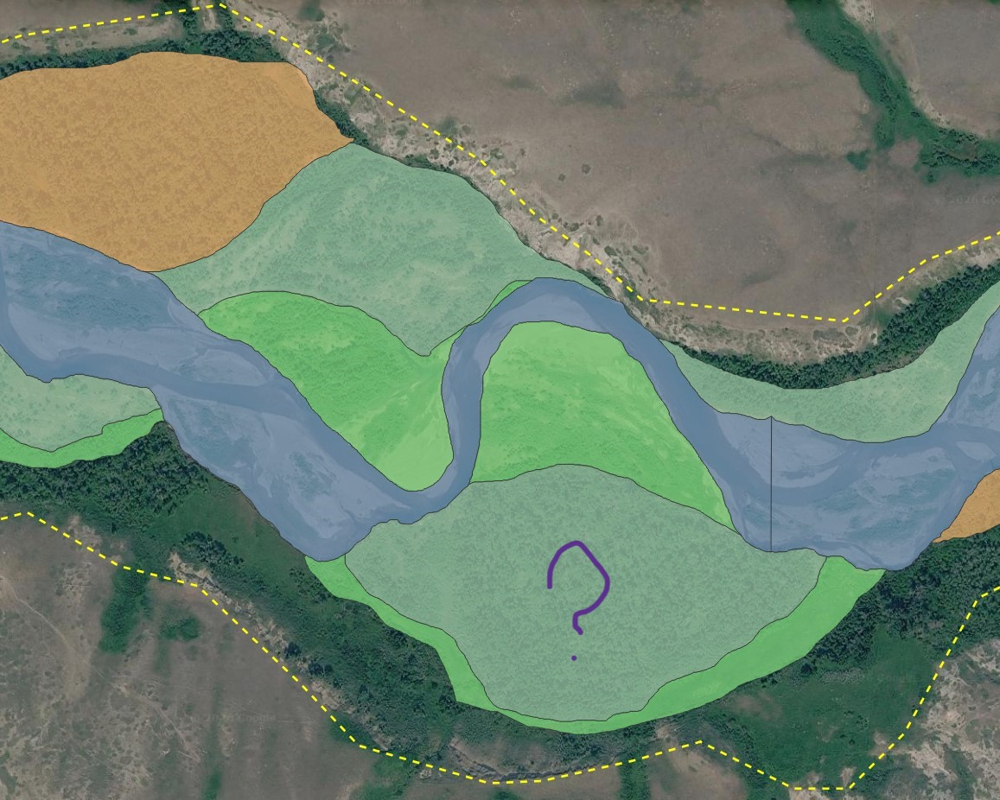
Figure 4.4: This section demonstrates an area of poor alignment
With all of these examples, I can’t tell whether there’s a bias between my mapping and VBET’s. Visually, DEM’s can be hard for me to interpret. Likewise, I would guess that imagery can be difficult to classify on a large scale, since the imagery signature for differnt kinds of vegetation can vary quite widely. I would guess the best product would be using VBET as a starting place, then visually adjusting it using available imagery and my own knowledge of the area.
5 Posted Riverscape Project
I was not able to get this layer posted to the Riverscapes data exchange because it produced errors I could not figure out. 'NoneType' object has no attribute 'data'…I must have messed something up.